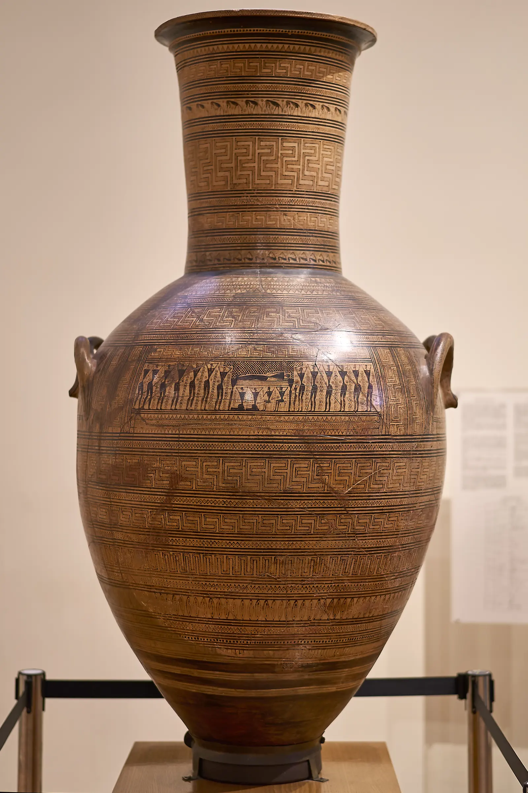
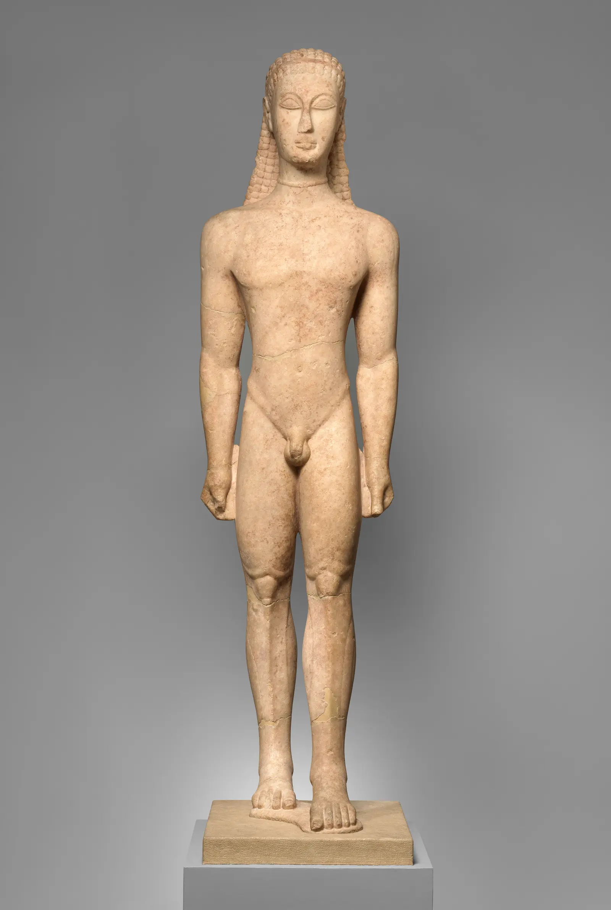
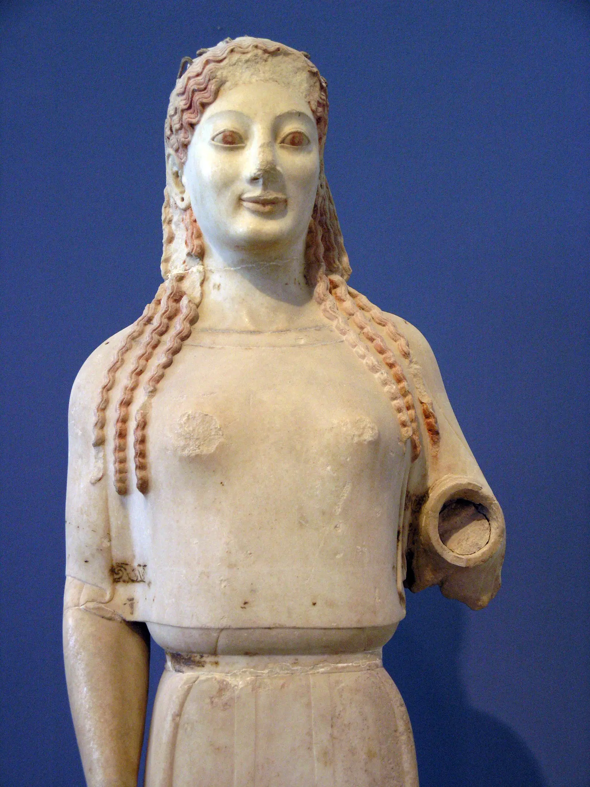
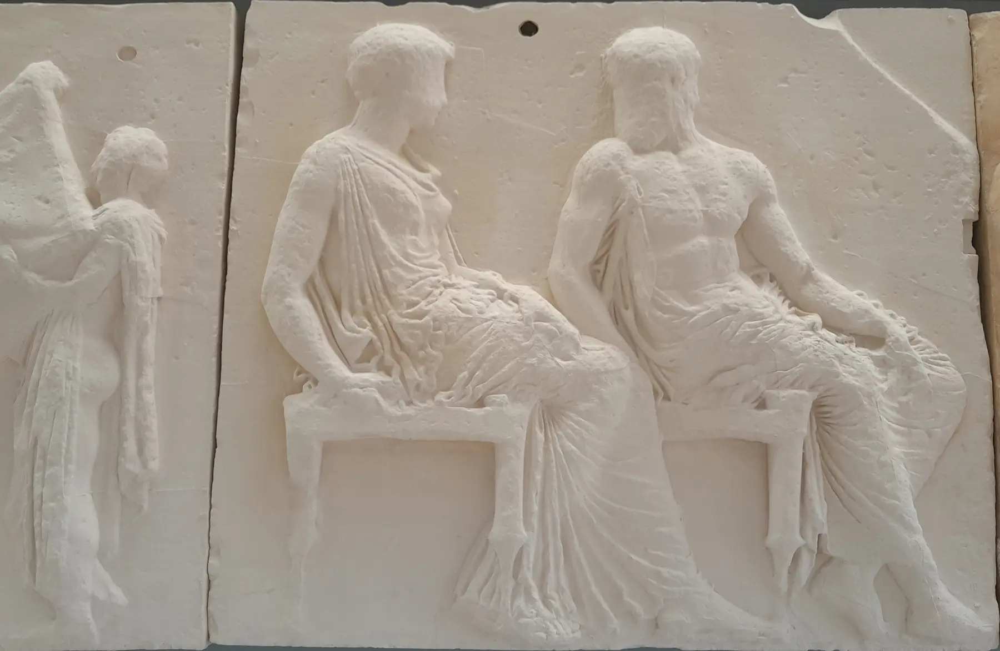

01 · Guarda prima di sapere
Un corpo reale
o un corpo possibile?
Niente titolo, autore o data. Prima delle informazioni, lascia che sia la postura a porre il problema.
Dove cade il peso?È fermo o sta per muoversi?Vedi una persona o un modello?
Lascia entrare la storia
02
Dopo l’ordine dei sovrani
Dal modulo precedente
La misura resta.
Ma cambia direzione.
In Mesopotamia e in Egitto la figura rendeva visibile soprattutto un ordine che discendeva dall’alto: il dio, il sovrano, la legge e il monumento assegnavano a ciascuno una posizione. Il mondo greco non cancella quei modelli; li incontra attraverso scambi, colonie, santuari e rotte del Mediterraneo, poi li ricompone.
La misura diventa sempre più una relazione interna alla forma: proporzione fra le parti, ritmo, limite, distribuzione delle forze. Non nasce una libertà moderna, né una Grecia isolata e autosufficiente. Nasce un altro modo di costruire una presenza umana.

03 · Prima del corpo naturale
La figura nasce
dentro un ritmo.
Nel grande vaso funerario del Dipylon il corpo non è ancora trattato come un volume anatomico continuo. Torace triangolare, vita stretta, braccia spezzate in angoli e teste ridotte a segni partecipano allo stesso ordine delle fasce, delle ripetizioni e degli intervalli.
Non è una “incapacità” di imitare la natura. È una scelta che rende leggibile il rito della prothesis, l’esposizione del defunto, e dispone il dolore collettivo in una struttura controllata. Prima di sembrare vivo, il corpo greco impara a occupare un ordine.
- Opera
- Anfora funeraria del Dipylon
- Data
- c. 760–750 a.C.
- Materia
- Terracotta dipinta
- Provenienza
- Kerameikos, Atene
- Conservazione
- Museo Archeologico Nazionale di Atene, A804
- Natura
- Originale greco
04
La polis inventa un nuovo spazio umano
Il corpo non appartiene
soltanto a se stesso.
La polis non è soltanto una città costruita: è una comunità politica, religiosa e militare che si riconosce in luoghi, culti, leggi e conflitti. Il corpo che le immagini esaltano è formato dentro questa rete.
- 01
Santuario
Statue e offerte stabiliscono una presenza davanti agli dèi e davanti alla comunità.
- 02
Agone
La competizione atletica e poetica trasforma l’eccellenza in una prova pubblica.
- 03
Ginnasio
L’educazione del cittadino maschio lega esercizio, disciplina, età e appartenenza.
- 04
Guerra
Il cittadino è anche corpo armato, inserito nella formazione e nella difesa della città.
- 05
Festa
Processioni e sacrifici rendono la città visibile a se stessa sotto lo sguardo divino.
- 06
Scambio
Colonizzazione e commerci portano forme egizie e orientali, poi trasformate localmente.
05
Costruire il corpo
Due presenze.
Due convenzioni.
Il nudo maschile non è il corpo “naturale” e l’abito femminile non è un semplice ostacolo all’anatomia. Kouros e kore rispondono a funzioni, gesti e identità differenti.

A · Presenza funeraria
Kouros di New York
La gamba sinistra avanza, ma il peso resta distribuito secondo una frontalità stabile. La posa deriva da modelli egizi, senza copiarne funzione e significato: questo giovane segnava la tomba di un aristocratico ateniese. La nudità, anch’essa convenzionale, rende il corpo un modello durevole di giovinezza e rango.
- Data
- c. 590–580 a.C.
- Materia
- Marmo di Nasso
- Museo
- The Met, 32.11.1
- Natura
- Originale greco

B · Presenza votiva
Peplos Kore
Il vestito non nasconde semplicemente il corpo: lo rende attraverso superfici, pieghe, colore, gioielli e gesto d’offerta. La statua fu dedicata sull’Acropoli e non rappresenta una donna ateniese colta nella vita quotidiana. Anche qui la presenza è costruita; solo che l’ideale femminile segue regole diverse da quello atletico maschile.
- Data
- c. 530 a.C.
- Materia
- Marmo di Paro
- Museo
- Acropolis Museum, Acr. 679
- Natura
- Originale greco
06 · Interazione caratterizzante
Dove cade
il peso?
Scegli un corpo e attiva un livello alla volta. Le linee seguono l’opera reale: non decorano la statua, ma rendono visibili le relazioni che producono la sua apparente naturalezza.
Sovrapponi i livelli
Attiva un livello: puoi combinarne più di uno.
07
La misura diventa canone
Policleto · V secolo a.C.
Non una formula.
Un corpo di relazioni.
Policleto chiamò Canone un trattato oggi perduto quasi interamente e, secondo la tradizione antica, affidò al Doriforo una dimostrazione visibile dei suoi princìpi. Non possediamo però una tabella completa capace di generare automaticamente il corpo perfetto.
La parola symmetria indica la commisurazione fra le parti: ogni misura acquista senso nel rapporto con le altre. La ponderazione distribuisce il peso; il contrapposto coordina la gamba portante e quella libera con risposte del bacino, del torace, delle spalle e degli arti.
La proporzione non vive in un segmento isolato.
Le forze opposte restano leggibili senza spezzare l’unità.
L’ideale non copia un corpo medio: sceglie, corregge e rende coerente.
Ora possiamo nominarla
Doriforo di Policleto
La statua osservata all’inizio è la celebre copia romana in marmo rinvenuta nella palestra sannitica di Pompei. Traduce un originale greco in bronzo del V secolo a.C. oggi perduto; il sostegno laterale e alcune soluzioni appartengono alle necessità della copia marmorea.
- Modello greco
- c. 450–440 a.C., bronzo perduto
- Esemplare
- Copia romana, fine I sec. a.C.–inizio I sec. d.C.
- Materia
- Marmo lunense
- Provenienza
- Pompei, palestra sannitica
- Museo
- MANN, inv. 6011
- Natura
- Copia romana da originale greco

08 · Il dio ha forma umana · il corpo della città
Stessa forma.
Non lo stesso rango.
Nel fregio del Partenone dèi e mortali condividono un corpo riconoscibilmente umano. L’antropomorfismo non cancella il sacro: lo rende presente attraverso figure perfette, più grandi e collocate in una relazione che distingue nettamente il rango divino.
La processione panatenaica collega abiti, gesti, cavalli, offerte e corpi alla festa della dea e all’identità ateniese. Il Partenone è tempio, progetto civico e manifestazione della potenza della città. La sua armonia formale convive con la guerra, il lavoro servile, l’esclusione politica e il controllo esercitato da Atene sulla lega dei suoi alleati.
- Opera
- Fregio orientale del Partenone
- Data
- c. 442–438 a.C.
- Materia originaria
- Marmo pentelico
- Contesto
- Partenone, Acropoli di Atene
- Immagine
- Replica museale di Atena ed Efesto
- Natura
- Replica dichiarata dell’opera antica
09
Il bianco che non esisteva
Il tempo ha tolto
il colore. Noi lo abbiamo chiamato purezza.
L’immagine di una Grecia interamente bianca nasce dalla perdita dei pigmenti, ma anche dal gusto di epoche successive. Statue e architetture potevano essere intensamente colorate.
Traccia materiale
Sulla Peplos Kore restano pigmenti; analisi spettrografiche hanno riconosciuto blu, verde e rosso nelle vesti e nelle decorazioni.
Ricostruzione scientifica
Una ricostruzione combina tracce, analisi e confronti. È un’ipotesi controllata, non l’originale perfettamente conservato.
Selezione moderna
Preferire il marmo nudo ha trasformato un effetto della conservazione in un ideale estetico apparentemente antico.
rossobluverdeocraincarnato
10
La misura sopravvive
L’ideale non muore.
Cambia istituzione.
Copie romane, Rinascimento, accademie, monumenti pubblici, atletica, fotografia e pubblicità riaprono — senza ripeterlo identico — lo stesso problema: chi decide quale corpo merita di diventare modello?
Il corpo esemplare
La proporzione promette ordine, controllo, salute e valore. Il modello appare naturale proprio quando nasconde le proprie selezioni.
Il corpo disciplinato
Allenamento, posa, luce e correzione tecnica trasformano il corpo reale in un’immagine da raggiungere.
Il corpo escluso
Ogni ideale crea una periferia: età, disabilità, genere, origine e forme non conformi rischiano di apparire come difetti anziché differenze.
Non ogni immagine moderna discende dalla Grecia. Sopravvivono, però, alcune domande: proporzione rispetto a quale misura, perfezione scelta da chi, equilibrio ottenuto a quale prezzo?
11 · Guarda di nuovo
La stessa statua.
Un altro sguardo.
La tua prima interpretazione
Non hai ancora scritto nulla.
Ora puoi riconoscere asse, gamba portante, gamba libera, inclinazione del bacino, risposta delle spalle, selezione anatomica e significato sociale del corpo. Non devi sostituire la prima impressione: devi metterla alla prova.
12 · Verifica e recupero
Hai imparato
a vedere la misura?
Le domande compaiono una alla volta. Se sbagli, una spiegazione mirata e una nuova domanda ricostruiscono il collegamento prima di proseguire.
Domanda 1 di 8
La domanda resta aperta
Il corpo greco imita la natura
oppure costruisce un ideale?
Fa entrambe le cose, ma non nello stesso senso. Osserva il peso, l’anatomia e il movimento; poi seleziona, ordina e corregge ciò che vede affinché il corpo incarni un modello religioso, civico ed estetico. La naturalezza è il risultato più raffinato della costruzione.
Ricomincia dallo sguardo ↑Fonti e crediti
Opere autentiche.
Informazioni verificabili.
Musei e ricerca
Hellenic National Archaeological Museum · periodo geometrico e Anfora del Dipylon
The Metropolitan Museum of Art · Kouros di New York
Acropolis Museum · Peplos Kore
Acropolis Museum · Kritios Boy
University of Cambridge, Museum of Classical Archaeology · Doriforo
Getty Research Institute · Policleto, copie e confronto tridimensionale
Immagini e licenze
Anfora del Dipylon: George E. Koronaios, CC BY-SA 4.0.
Kouros di New York: The Metropolitan Museum of Art, Open Access, Public Domain / CC0.
Peplos Kore: Marsyas, CC BY-SA 2.5.
Kritios Boy: Marsyas, CC BY-SA 2.5.
Doriforo MANN 6011: Marie-Lan Nguyen, CC BY 2.5.
Replica di Atena ed Efesto dal fregio del Partenone: Deiadameian, CC BY-SA 4.0. L’immagine mostra una replica museale, non l’originale antico.
Tutte le fotografie sono state ottimizzate senza alterazioni interpretative. Le sovrapposizioni dell’interazione sono apparati didattici dichiarati.